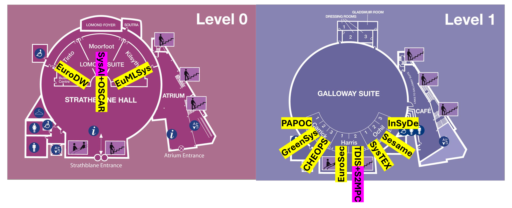

Workshop Tutorial
| Time | TintoLevel 0 | MoorfootLevel 0 | KilsythLevel 0 | Carrick 1Level 1 | Carrick 2Level 1 | Carrick 3Level 1 | Harris 1Level 1 | Harris 2Level 1 | Ochil 1Level 1 | Ochil 2Level 1 | Ochil 3Level 1 |
|---|---|---|---|---|---|---|---|---|---|---|---|
| 8:15 – 9:00 Registration / Cafe | |||||||||||
| 9:00 – 10:30 First Morning |
Doctoral (EuroDW) | SysAI Tutorial | EuroMLSys | PAPOC | GreenSys | CHEOPS | EuroSec | S2MPC Tutorial | SysTEX | Sesame | InSyDe |
| 10:30 – 11:00 Break | |||||||||||
| 11:00 – 12:30 Second Morning |
Doctoral (EuroDW) | SysAI Tutorial | EuroMLSys | PAPOC | GreenSys | CHEOPS | EuroSec | S2MPC Tutorial | SysTEX | Sesame | InSyDe |
| 12:30 – 14:00 Lunch | |||||||||||
| 14:00 – 15:30 First Afternoon |
Doctoral (EuroDW) | OSCAR | EuroMLSys | PAPOC | GreenSys | CHEOPS | EuroSec | TDIS | SysTEX | Sesame | InSyDe |
| 15:30 – 16:00 Break | |||||||||||
| 16:00 – 17:30 Second Afternoon |
Doctoral (EuroDW) | OSCAR | EuroMLSys | PAPOC | GreenSys | CHEOPS | EuroSec | TDIS | SysTEX | Sesame | InSyDe |
| 17:30 – 19:30 Welcome Reception | |||||||||||
All workshops and tutorials take place at the Edinburgh International Conference Centre (EICC). The floor plan below shows the locations of each room.
